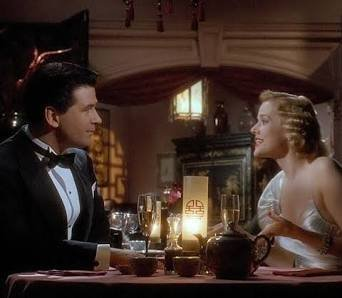
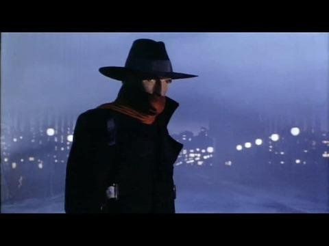

Celui-là, je l'ai d'abord vu en morceaux.
Quelques fragments attrapés par-ci, par-là quand j'étais ado : une silhouette en cape noire, un rire qui résonne dans la nuit, des gratte-ciel qui n'existent que dans les années 30. Jamais le film en entier, jamais dans l'ordre. Juste des images qui restent sans qu'on sache vraiment d'où elles viennent.
Je l'ai redécouvert bien des années plus tard, adulte, et cette fois du début à la fin.
Et je dois l'avouer : le film est plutôt réussi.
Trois mots accompagnaient son titre sur l'affiche française, et je ne trouve pas mieux pour le résumer : mystère, danger, fascination.
Ce soir, on rassemble enfin les morceaux.

The Shadow — affiche française, 1994
The Shadow.
1994. Réalisé par Russell Mulcahy. Avec Alec Baldwin, John Lone, Penelope Ann Miller, Tim Curry et Ian McKellen.
Produit par Universal, sur un scénario de David Koepp, qui venait d'écrire Jurassic Park. Musique de Jerry Goldsmith.
Le film adapte l'un des tout premiers justiciers masqués de la culture américaine. The Shadow naît à la radio en 1930, puis devient le héros de centaines de romans pulp signés Walter B. Gibson. Avant Batman, avant Superman, il y avait lui, avec une phrase que toute l'Amérique connaissait par cœur : « Qui sait quel mal se cache dans le cœur des hommes ? The Shadow le sait. »
Alec Baldwin, qu'on a déjà croisé dans SOMEDAY avec Guet-Apens, Vengeance Froide et À couteaux tirés, y incarne Lamont Cranston. Le jour, c'est un playboy new-yorkais. La nuit, c'est un justicier capable d'obscurcir l'esprit des hommes pour se rendre invisible.
New York dans les années 30 : des gratte-ciel Art déco, des gangsters en costume trois-pièces, et un héritier de Gengis Khan bien décidé à faire sauter la ville.
The Shadow n'a qu'une ambition : faire revivre le serial d'aventure avec les moyens d'un blockbuster.
Au début des années 90, tout Hollywood court après le même rêve : refaire Batman.
Le film de Tim Burton, sorti en 1989, a prouvé qu'un justicier masqué pouvait devenir un phénomène mondial. Chaque studio fouille alors dans ses tiroirs à la recherche de son propre héros. Universal ressort le plus ancien de tous : The Shadow, celui qui avait inspiré Batman lui-même.
Le producteur Martin Bregman en détient les droits depuis le début des années 80. Le projet traîne pendant plus de dix ans. Sam Raimi, entre autres, rêvait de l'adapter. Faute d'obtenir les droits, il invente son propre justicier défiguré et tourne Darkman en 1990.
Le scénario est confié à David Koepp, qui sort de Jurassic Park. La réalisation revient à Russell Mulcahy, un Australien venu du clip vidéo : Duran Duran, Elton John, et même « Video Killed the Radio Star », le tout premier clip diffusé sur MTV. Au cinéma, il a signé Highlander. Personne ne sait mieux que lui fabriquer une image qui frappe.
Pour le rôle de Lamont Cranston, Universal choisit Alec Baldwin, révélé par À la poursuite d'Octobre rouge. Face à lui, John Lone, inoubliable dans Le Dernier Empereur, joue Shiwan Khan, dernier descendant de Gengis Khan. Autour d'eux, un casting de luxe : Penelope Ann Miller, Tim Curry, Ian McKellen et Peter Boyle.
Le New York des années 30 est entièrement recréé : décors en studio, maquettes, peintures sur verre, une ville Art déco plus grande que nature, pensée comme une case de bande dessinée. Jerry Goldsmith compose une partition ample et sombre, dans la tradition des grands thèmes d'aventure.
Le film sort aux États-Unis le 1er juillet 1994, avec un objectif clair : lancer une franchise.

Lamont Cranston (Alec Baldwin) et Margo Lane (Penelope Ann Miller)
Tibet, au lendemain de la Première Guerre mondiale.
Lamont Cranston n'est pas encore un héros. Il se fait appeler Ying Ko et règne sur un trafic d'opium par la peur et la violence. Jusqu'au jour où un mystérieux maître, le Tulku, le capture et lui offre une seconde chance : racheter ses crimes en apprenant à dominer ses propres ténèbres.
Quelques années plus tard, à New York, Cranston est redevenu un riche oisif, habitué des clubs et des restaurants chics. Mais la nuit, il est The Shadow. Il peut obscurcir l'esprit des hommes, se rendre invisible et deviner leurs pensées. Il s'appuie aussi sur un réseau secret d'agents qui lui doivent tous la vie.
Un jour, un sarcophage arrive au musée d'histoire naturelle. À l'intérieur, Shiwan Khan, dernier descendant de Gengis Khan, formé aux mêmes pouvoirs que lui. Khan a un projet : achever la conquête du monde commencée par son ancêtre, en commençant par New York.
Sur sa route se trouve Margo Lane, une jeune femme mondaine dotée d'un don étrange : elle est la seule à percevoir la présence de The Shadow. Son père, un scientifique, va se retrouver au cœur du plan de Khan.
Deux hommes aux mêmes pouvoirs, une ville plongée dans l'ombre, et une question qui traverse tout le film : peut-on vraiment échapper au mal qu'on porte en soi ?
The Shadow tient en trois mots, et c'est à travers eux qu'il faut le regarder.
Le mystère, d'abord. Russell Mulcahy filme New York comme un rêve de pulp. Des rues noyées de brume, des néons rouges, des gratte-ciel qui percent les nuages, un hôtel entier caché aux yeux de tous. Le héros n'apparaît presque jamais vraiment : une ombre qui glisse sur un mur, un rire qui résonne sans source, une silhouette au chapeau qui se découpe dans la fumée. Mulcahy vient du clip, et ça se voit. Chaque plan est pensé comme une image forte, et le film tient autant de l'illustration de roman pulp que du cinéma.
Le danger, ensuite. Lamont Cranston n'est pas un héros pur. Le film commence avec lui en seigneur de guerre, et il ne l'oublie jamais. Alec Baldwin joue cette dualité avec une vraie finesse : l'élégance du mondain en surface, et juste en dessous une noirceur qui menace de remonter. The Shadow ne combat pas seulement le mal. Il combat celui qu'il a été.
En face, John Lone est un adversaire à sa hauteur. Son Shiwan Khan est raffiné, ironique, presque charmant, et c'est ce qui le rend inquiétant. Les deux hommes sont les deux faces d'un même pouvoir, et leurs affrontements tiennent autant du duel mental que du combat physique.
La fascination, enfin. Le film est porté par un plaisir de l'artisanat qu'on ne voit presque plus : maquettes, décors construits, costumes d'époque, trucages optiques. La partition de Jerry Goldsmith, ample et sombre, donne à l'ensemble un souffle de grand serial. Et autour du duo principal, Tim Curry en savant veule, Ian McKellen en génie distrait et Peter Boyle en chauffeur de taxi fidèle apportent une touche d'humour bienvenue.
Tout n'est pas parfait. Le ton hésite parfois entre premier degré et clin d'œil, et certaines répliques sentent davantage 1994 que 1937. Mais le film assume son univers jusqu'au bout, sans jamais le prendre de haut.
Mystère, danger, fascination : The Shadow tient les trois promesses.

Qui sait quel mal se cache dans le cœur des hommes ?
The Shadow a été écrasé par l'été où il est sorti.
Le calendrier, d'abord. Juillet 1994 est l'un des étés les plus chargés de l'histoire d'Hollywood. Speed vient de sortir, Le Roi lion remplit toutes les salles, Forrest Gump arrive cinq jours plus tard, et True Lies deux semaines après. Coincé entre ces géants, The Shadow n'a jamais eu l'espace pour respirer.
Le box-office suit : environ quarante millions de dollars de budget, à peine plus de trente millions de recettes aux États-Unis. Pas une catastrophe, mais bien trop peu pour lancer la franchise espérée. Les suites prévues sont abandonnées, et le personnage retourne dans l'ombre.
Il y a aussi le problème du héros lui-même. En 1937, toute l'Amérique connaissait The Shadow. En 1994, les adolescents n'en ont jamais entendu parler. Le film vise un public nostalgique qui n'existe plus vraiment, et une nouvelle génération qui ne sait pas qui est cet homme au chapeau et à l'écharpe rouge.
Il paie enfin le sort de toute une famille de films. Au début des années 90, Hollywood tente de ressusciter les héros pulp des années 30 : Dick Tracy, Rocketeer, puis The Phantom deux ans plus tard. Aucun ne devient la franchise espérée. The Shadow est rangé dans le même tiroir : celui des tentatives rétro qui n'ont pas pris.
Et un an plus tard, Batman Forever occupe à nouveau tout l'espace du justicier masqué. Le modèle a repris sa place, et la source d'inspiration a été oubliée.
Le film a continué à vivre autrement : à la télévision, en VHS, en fragments attrapés un soir, par-ci, par-là.
Un film singulier, sorti au pire moment, pour un héros que plus personne n'attendait.
Parce que le film vu en entier n'a rien à voir avec les fragments qu'on en gardait.
Adolescent, je n'en avais que des éclats : une cape, un rire, une ombre sur un mur. Adulte, j'ai découvert ce qui reliait tout ça, un vrai film d'aventure, cohérent, habité, bien plus réussi que sa réputation ne le laisse croire.
Parce que c'est un film qui a du style, et qui l'assume. Chaque plan de Russell Mulcahy est une image de pulp prise sur le vif : brume, néons, gratte-ciel impossibles. Trente ans plus tard, cette esthétique n'a pas vieilli. Elle a gagné en charme.
Parce qu'Alec Baldwin y trouve l'un de ses meilleurs rôles de premier plan. Un héros hanté par son passé, qui se bat autant contre lui-même que contre son ennemi. Et parce que John Lone lui offre un adversaire à sa mesure, élégant et redoutable.
Parce que tout ce qu'on voit à l'écran a été construit : décors, maquettes, costumes, trucages optiques. Un cinéma artisanal, généreux, qu'on ne fabrique presque plus.
Et parce qu'avant Batman il y avait The Shadow. Voir le film, c'est remonter à la source de tous les justiciers masqués qui ont suivi.
Mystère, danger, fascination. Trente ans plus tard, les trois mots tiennent toujours.
Il y a des films qu'on connaît sans les avoir jamais vraiment vus.
The Shadow, pour moi, c'était ça : une poignée d'images dispersées dans ma mémoire d'adolescent. Une ombre sur un mur, un rire dans la nuit, une ville qui semblait sortie d'un rêve. Je ne savais ni d'où elles venaient ni ce qui les reliait. Je savais seulement qu'elles étaient restées.
Des années plus tard, j'ai enfin vu le film du début à la fin. Les fragments ont trouvé leur place, un à un, comme les pièces d'un puzzle qu'on aurait laissé en plan trop longtemps. Et l'image complète valait l'attente.
C'est peut-être le propre des films qu'on a vus par morceaux : ils ne nous quittent jamais tout à fait. Ils attendent simplement qu'on revienne les chercher.
« Qui sait quel mal se cache dans le cœur des hommes ? »
The Shadow le sait. Et maintenant, nous aussi.
La cassette est dans le lecteur. On rembobine.
Titre original
The Shadow
Pays
États-Unis
Genre
Aventure · Fantastique
Durée
108 min
Producteur
Martin Bregman · Universal
Avec aussi
Penelope Ann Miller · Tim Curry · Ian McKellen
D'après
Le personnage de Walter B. Gibson
Note
Vu par fragments ado, redécouvert adulte
SOMEDAY — S3 EP. 07